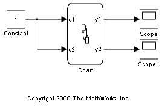
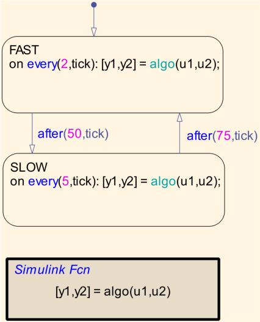
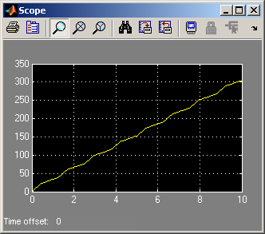

Stateflow® を使った Simulink® アルゴリズムのスケジューリング
このモデルでは、Stateflow を使用して Simulink アルゴリズムをスケジューリングする方法を示します。
Stateflow チャート Chart は、シミュレーションで異なるレートと異なる時間に実行する必要がある Simulink アルゴリズムで構成されています。Stateflow は、これらのレート遷移がいつ発生するのを決定する遷移ロジックの設計に理想的に適しています。他方では、Simulink アルゴリズムは実際のデータ処理に使用されます。チャートの入出力は Simulink サブシステムに渡されます。このデモの目的のため、Simulink アルゴリズムが呼び出されるたびに、入力を出力に加算します。
シミュレーションの実行時、以下に示すように変化するレートをカウントするカウンターが表示されます。
